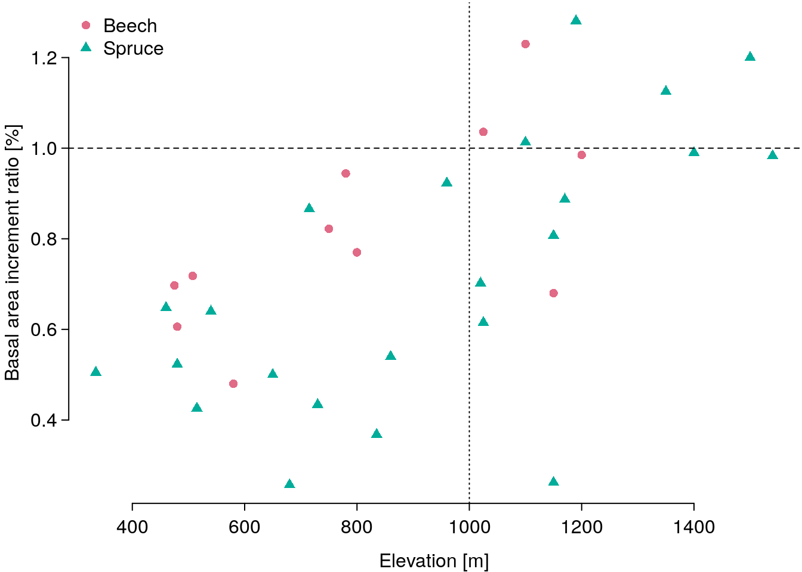

Introduction to R
July 09, 2021 (Version 0.0.1)
About this course
This course introduces basic R-programming skills needed for applied statistical modeling in R.
All contents are licensed under CC BY-NC-ND 4.0.
1 Introduction: What is R?
…
2 Data
We will use two data-sets within this course.
Drought
bair <- c(.505, .648, .523, .426, .64, .5, .257, .866, .434, .368, .54, .923, .702,
.615, 1.013, .807, .262, .887, 1.281, 1.125, .99, 1.2, .983, .697, .606,
.718, .48, .822, .944, .77, 1.036, 1.23, .68, .985)
elev <- c(335, 460, 480, 515, 540, 650, 680, 715, 730, 835, 860, 960,
1020, 1025, 1100, 1150, 1150, 1170, 1190, 1350, 1400, 1500, 1540,
475, 480, 507.5, 580, 750, 780, 800, 1025, 1100, 1150, 1200)
species <- c("Spruce", "Spruce", "Spruce", "Spruce", "Spruce", "Spruce",
"Spruce", "Spruce", "Spruce", "Spruce", "Spruce", "Spruce", "Spruce",
"Spruce", "Spruce", "Spruce", "Spruce", "Spruce", "Spruce", "Spruce",
"Spruce", "Spruce", "Spruce", "Beech", "Beech", "Beech", "Beech",
"Beech", "Beech", "Beech", "Beech", "Beech", "Beech", "Beech")
drought <- data.frame(bair = bair,
elev = elev,
species = species)
summary(drought)## bair elev species
## Min. :0.2570 Min. : 335.0 Beech :11
## 1st Qu.:0.5272 1st Qu.: 597.5 Spruce:23
## Median :0.7100 Median : 847.5
## Mean :0.7489 Mean : 888.3
## 3rd Qu.:0.9732 3rd Qu.:1150.0
## Max. :1.2810 Max. :1540.0A first plot:
pch_here <- c(16, 17)
col_here <- colorspace::diverging_hcl(n = 20, pal = "Lisbon")[c(4, 16)]
plot(drought$elev, drought$bair, las = 1, bty = "n",
xlab = "Elevation [m]", ylab = "Basal area increment ratio [\\%]",
pch = pch_here[1 + (drought$species == "Spruce")],
col = col_here[1 + (drought$species == "Spruce")])
abline(h = 1, lty = 2)
abline(v = 1000, lty = 3)
legend("topleft", pch = pch_here, col = col_here, legend = c("Beech", "Spruce"),
bg = "white", bty = "n")
References
Private webpage: uncertaintree.github.io↩